BLE 协议之链路层
[toc]
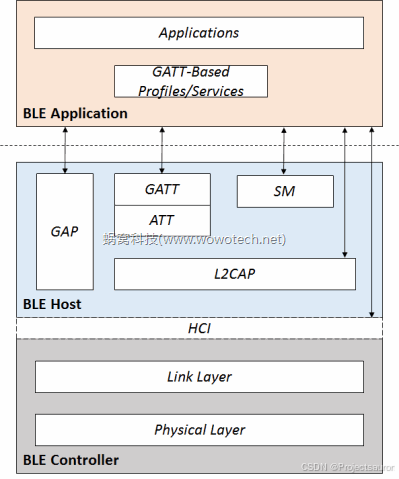
一、前言
在 BLE 协议之物理层
一文中，我简单介绍了 BLE 的物理层。接下来就是链路层（Link Layer）了，它主要的功能，就是在这些 Physical Channel 上收发数据，与此同时，不可避免的需要控制 RF 收发相关的参数。除此之外，还要做到以下几个功能：
- 通道共享 ：
Physical Layer仅仅提供了有限的 40 个Physical Channel，而 BLE 中参与通信的实体的数量，肯定不是这个数量级。Link Layer需要解决Physical Channel的共享问题 - 抽象出逻辑链路 ：通信是两个实体之间的事情，对这两个实体来说，它们希望看到一条为自己独享的传输通道（就是我们所熟悉的 逻辑链路，Logical Link）。这也是
Link Layer需要解决的 - 可靠传输 ：
Physical Channel是不可靠的，任何数据传输都可能由于干扰等问题而损毁、丢失，这对有些应用来说，是接受不了的。因此Link Layer需要提供校验、重传等机制，确保数据传输的可靠性
接下来，就看一下链路层都做了哪些事。
二、状态和角色
BLE 协议在 Link Layer 层抽象出 5 种状态 ：
Standby State：==待机状态==，不发送数据，也不接收数据。该状态可以由任何状态进入，也可以切换到除Connection State外的任意一种状态。Advertising State：==广播状态==，可以发送，监听，响应广播通道包，由Standby State进入。Scanning State：==扫描状态==，能够监听广播设备发送的广播包，由Standby State进入。Initiating State：==初始化状态==，监听指定设备的广播通道包，并且响应广播包，并发送连接请求，以便和广播设备建立连接。当连接成功后， Initiater 和对应的 Advertiser 都会切换到Connection State。该状态由Standby State进入。Connection State：和某个实体==建立了单独通道的状态==，在通道建立之后，由Initiating State或Advertising State进入。通道断开后，会重新回到Standby State。
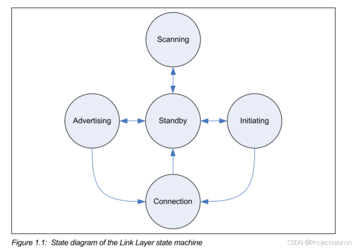
进入 Connect State 后，又定义了两种角色 ：
Master Role：由Initiating State进入的Connect State，连接成功后，变成了Master Role。Slave Role：由Advertising State进入的Connect State，连接成功后，变成了Slave Role。
一个状态机在同一时刻有且只能处于一个状态。但是，一个 BLE 设备在同一时刻可以拥有多个独立的状态机！多个状态机并存的情况有限制条件。以下为几种有效的组合状态：
- Connection + Advertising
- Connection + Initiating
- Connection(Master) + Connection(Master)
这也就意味着，BLE 协议栈是支持一主多从这种连接模式的。不过要注意，不支持一从多主模式，即一个从机同时与多个主机相连。并且，一个 BLE 设备在同一时刻不能同时为主机和从机角色。
三、Air Interface Packets
状态和角色定义完成后，剩下的事情就简单了，主要包括两类：
- 提供某一状态下，和其它实体对应状态之间的数据交换机制 ；
- 根据上层实体的指令，以及当前的实际情况，负责状态之间的切换 。
BLE 协议中，这些事情是由空中接口数据包（Air Interface Packets）完成的。
Air Interface Packets 定义了一种包的格式，主要用于描述 LE Uncoded PHY、advertising channel 和 data channel 的通信格式 。
其格式如下：
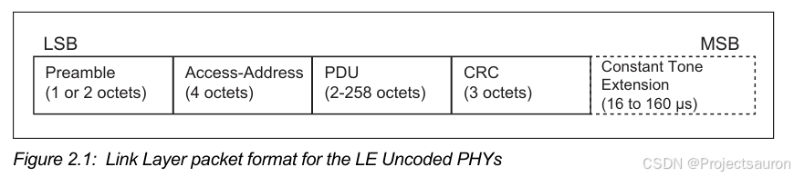
见
Core5.4 P2684
下面对各个字段继续详细分析。
1、Preamble 字段
Preamble（前导码）： 是 0 和 1 的交替序列：
- 当物理通道为
LE 1M PHY时，前导码为 1Byte ； - 当物理通道码为
LE 2M PHY时，前导码为 2Byte 。
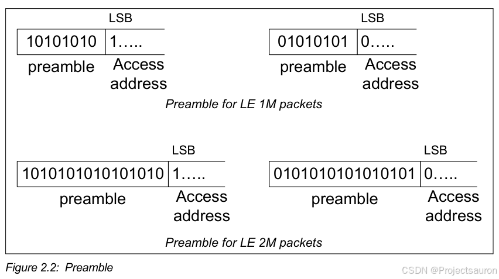
2、Access Address 字段
Access Address ：对于所有在广播通道发送的数据包，其值都为 0x8E89BED6。
一旦链路层处于 Initiating State 状态时，会生成一个新的 Access Address 用于连接。该 Access Address 为一个 4Byte 的值。
蓝牙使用 Access Address 来标识不同的设，Access Address 可以是一个公共的地址，也可以是一个随机的地址 ，无论是哪一种类型的地址，均为 48bits 长度。
- 公共地址 ：官方定义的一些规范，通用的地址，这里不做解释。
- 随机地址 ：可能是静态地址 ，或者是私有地址 。
2.1 静态地址
见
Core5.4 P2679
静态地址一般都是随机生成的，但是需要满足下面的几点规则：
- 地址的 两个最高有效位应该等于 1
- 随机地址部分，至少有一位为 0
- 随机地址部分，至少有一位为 1
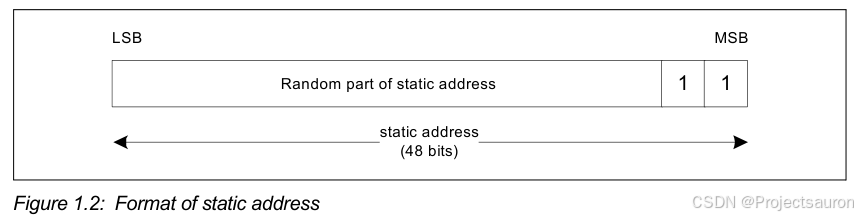
大多数的设备（手机）都是在上电之后，初始化一次静态地址，一旦初始化后，静态地址就不变了；重新上电后，会生成新的静态地址。
2.2 私有地址
见
Core5.4 P2680
私有地址又分为 ：不可解析私有地址和可解析的私有地址。
- 不可解析的私有地址
不可解析私有地址，遵守以下生成规则：
- 地址的两个最高有效位应该等于 0
- 随机地址部分，至少有一位为 0
- 随机地址部分，至少有一位为 1
- 不能与公共地址有冲突
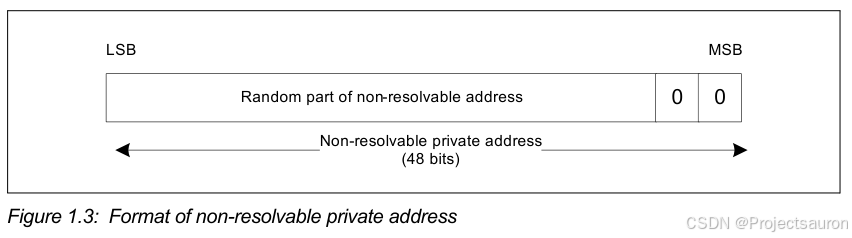
- 可解析的私有地址
可解析的私有地址，说直白点就是带加密算法所生成的。设备需要有 Local Identity Resolving Key(IRK) 或者 the Peer Identity Resolving Key (IRK) 这两个密钥，生成 24bit 的号码，
可解析的私有地址，遵守以下规则：
- 地址的 两个最高有效位为 0 和 1
- 随机地址部分，至少有一位为 0
- 随机地址部分，至少有一位为 1
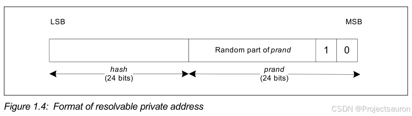
==总结==：最高有效位的前两位，代表了设备地址的类型
3、PDU 字段
前面介绍过，
Physical Layer将通道分为广播通道和数据通道，那么Link Layer也随之对应划分了两种 PDU 类型。
PDU（Package Data Unit） ：分为两种：
- 广播通道上传输（Advertising Channel PDU）；
- 数据通道上传输（Data Channel PDU），长度为 2-257 字节。
3.1 Advertising Channel PDU
广播通道 PDU ，包括 Advertising PDU、Scanning PDU、Initiating PDU 三种类型。
广播通道的 PDU ，由 16bit 的数据头和 1-255Byte 的可变大小数据组成。
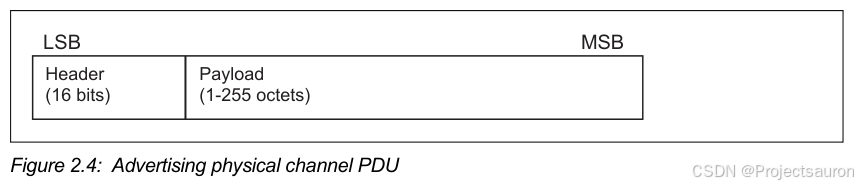
3.1.1 Header 字段
下面是 16bit 的数据头格式：
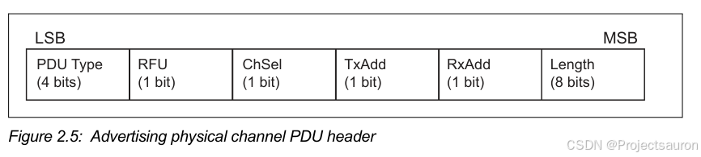
PDU Type 有多种，详细参考
core 5.0 P2690
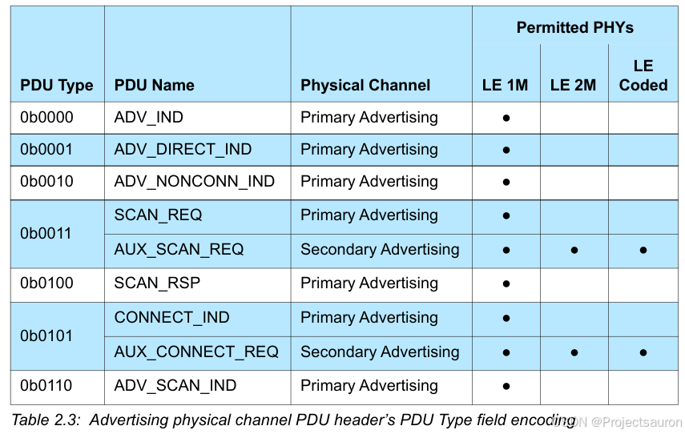
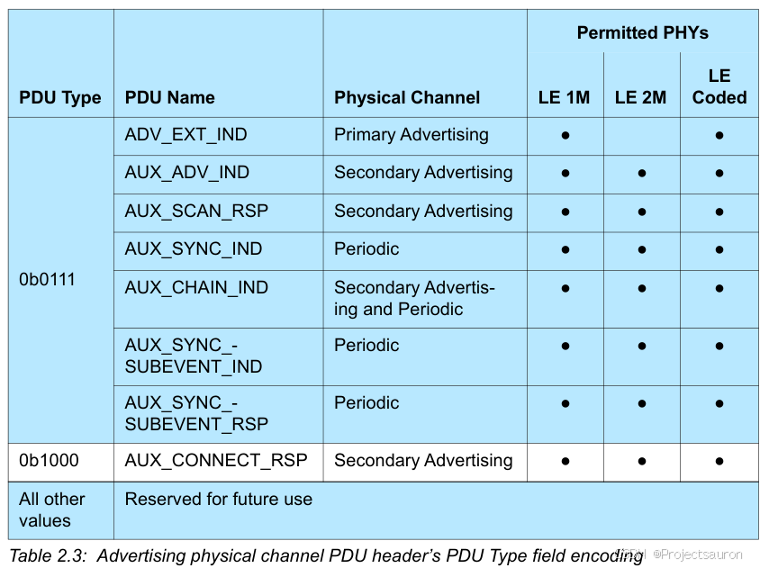
ChSel：该位为 1，支持LE Channel Selection Algorithm，即 LE通道选择算法 ，反之，不支持。TxAdd：该位为 0，表明Payload的 AdvA 字段为公共的；该位为 1，表明 Payload 的 AdvA 字段为随机的。Length：该字段表明了 Payload 的长度
3.1.2 Payload 字段
Payload字段组成如下 ：
常见的
Advertising PDU有 ：
ADV_IND：该 PDU 用于连接和扫描无定向的广播事件。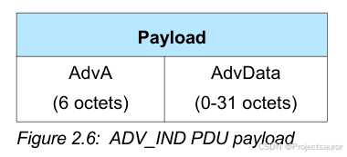
ADV_DIRECT_IND：该 PDU 用于连接和扫描定向的广播事件。
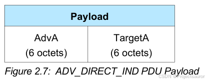
ADV_NONCONN_IND：该 PDU 用于不可连接和不可扫描的非定向广播事件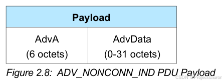
ADV_SCAN_IND：该 PDU 仅可用于可扫描的非定向广播事件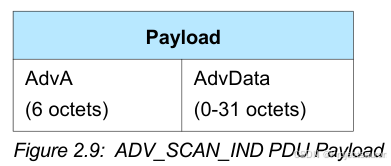
常见的
Scaning PDU有 ：
SCAN_REQ：该 PDU 为发送扫描请求
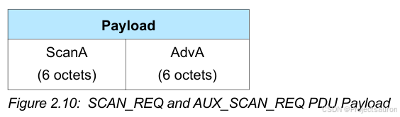
SCAN_RSP：该 PDU 包括了广播者的地址和返回的扫描响应数据。
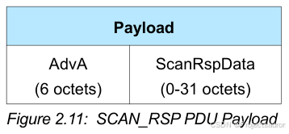
常见的
Initiating PDU有 ：
CONNECT_IND：该 PDU 用于建立连接
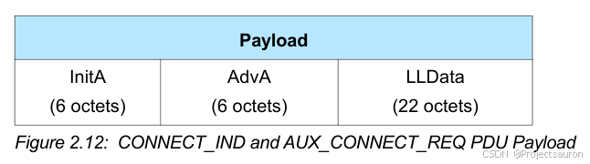
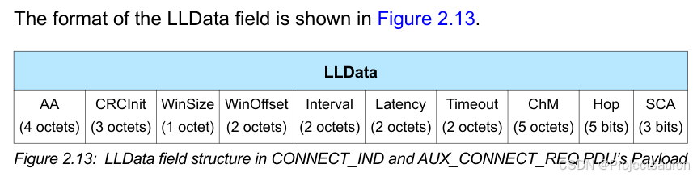
综上可见，每一种 PDU Type ，都会定义自己的 Payload 组成。
3.2 Data Channel PDU
数据通道 PDU 的格式，包括 16bit 的 Header ，可变大小的 Payload ，以及可选的消息完整性检查 MIC 字段。
包的格式如下：
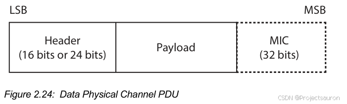
3.2.1 Header 字段
Header包括：
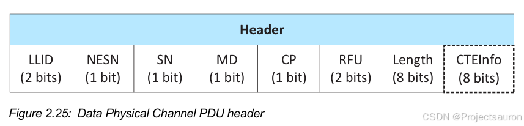
LLID：该字段标识了这个包为LL Data PDU或者LL Control PDUNESN：下次期望的序列号
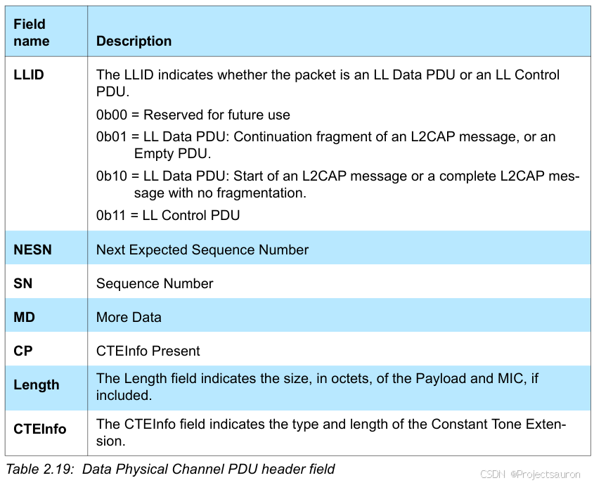
3.2.2 Payload 字段
根据 LLID 字段，Data Channel PDU 又分为 LL Data PDU 和 LL Control PDU 两种类型。
LL Data PDU：该 PDU 用于发送链路层的数据。- 当 LLID 为 01b 时，并且 Length=0 时，表示一个 Empty PDU 。
- 当 LLID 为 10b 时，则 Length 不能设置为 0。
LL Control PDU：该 PDU 用于控制链路层的连接。
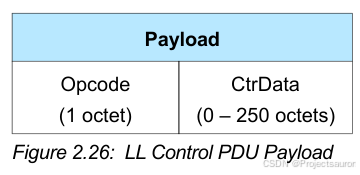
Opcode 操作码也有多种：
每一种操作码对应不同的数据长度。详细可见
core5.0 P2716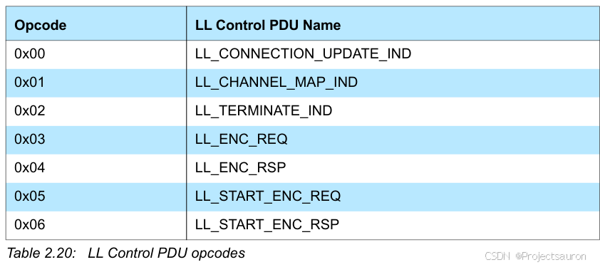
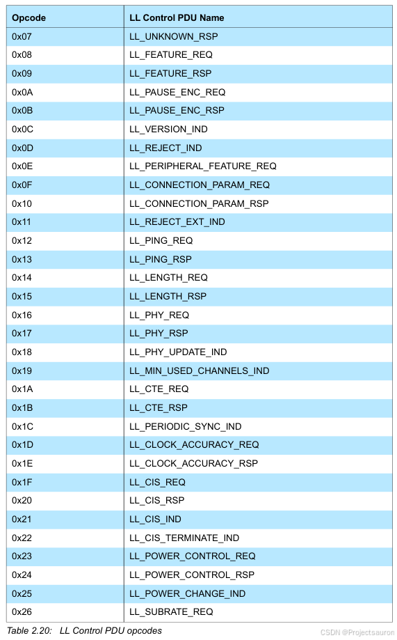
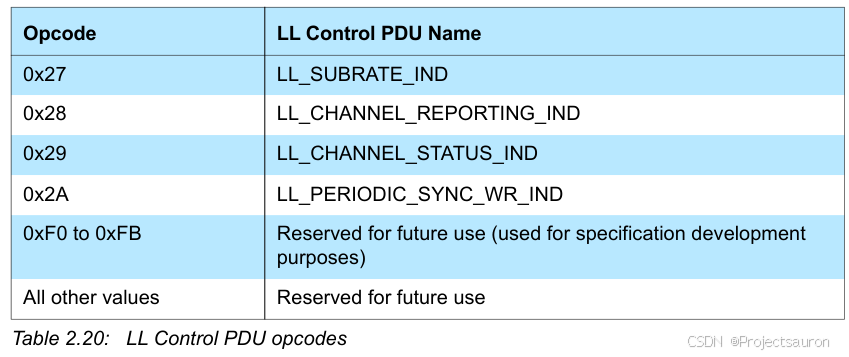
4、CRC 字段
CRC字段：在链路层包的最后，校验所有的 PDU 数据，大小长度为 3Byte 。
如果 PDU 数据加密，则 CRC 将会计算加密后的 PDU 数据。
CRC 算法采用多项式求和的形式进行，感兴趣的可以自行查阅资料了解。
四、小结
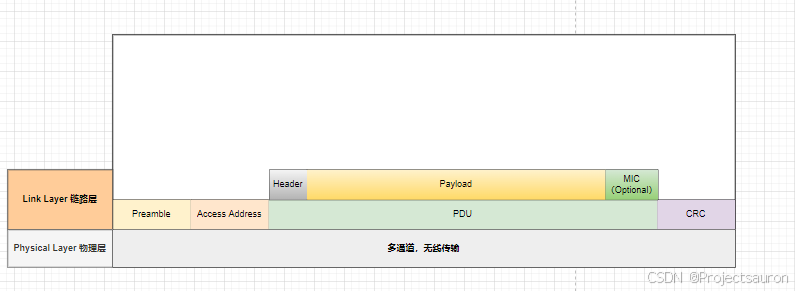